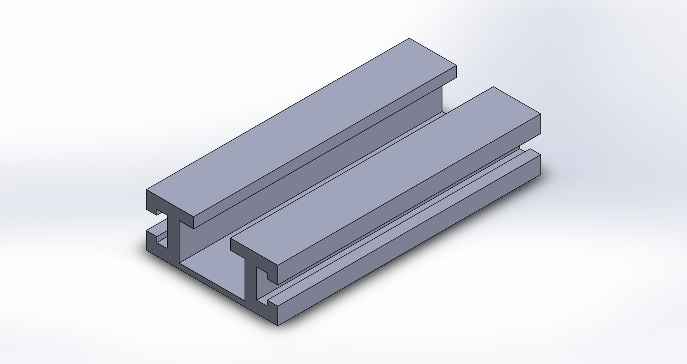

Perfil de alumínio
DSL-001 — Polímero deslizante retangular
DSL-001
Polímero deslizante retangular

| Material | UHMW-PE (polietileno de ultra-alto peso molecular) |
| Superfície — área | 1.000 mm²/mml |
| Superfície — perímetro | 140 mm²/mml |

VISTA ISOMÉTRICA · referência de apresentação